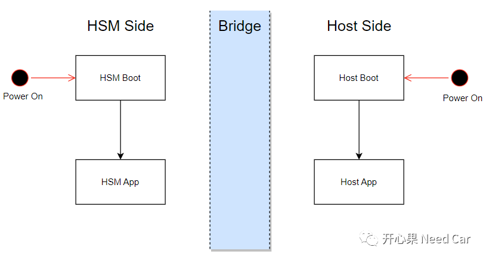
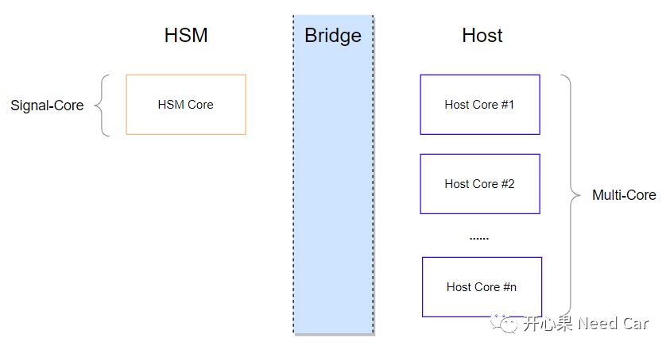
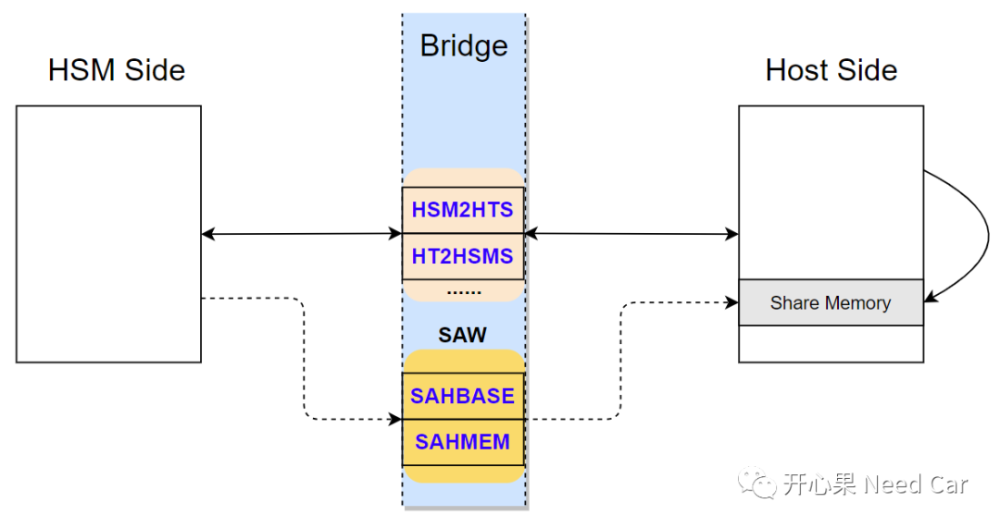
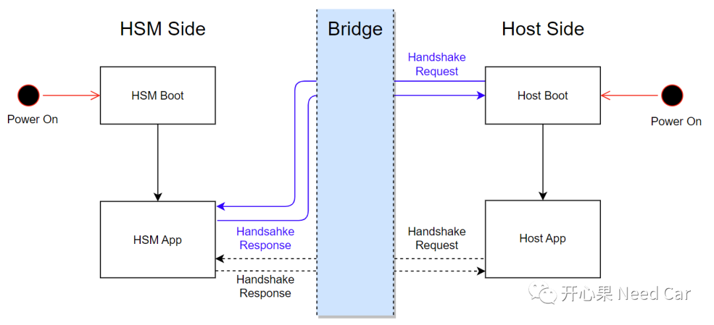

如果要了解信息安全，首先要解决的问题便是Host和HSM（Hardware Security Module）的通信问题，只有两者有效"对话"，才能更准确的知道彼此的"诉求"，进而执行正确的Action。所以，Host是如何与HSM建立通信的呢？本文聊一聊这个话题。
提示：基于TC3xx讨论
HSM除了芯片的硬件模块，还有对应的软件部分，当软件中包含HSM时，整个软件程序将至少包含4个进程：HSM Boot、HSM App、Host Boot以及Host App。ECU加电，HSM端，程序运行顺序：HSM Boot->HSM App；Host端，程序运行顺序：Host Boot->Host App，如下所示：

由于HSM主要任务是处理信息安全相关的操作，它所干的活需要与主芯片端隔离，不能让Host端知道HSM是如何干的，否则，就谈不上信息安全。因此，就出现了HSM端（HSM Side）和Host端（Host Side），两者中间，有一座"鹊桥"（Bridge）。通过喜鹊搭建的Bridge，牛郎（Host）就可以与织女（HSM）"互诉衷肠"了。在MCU中，除了HSM的其他处理器均称为Host，eg：TC3xx中，HSM Core是一个ARM Cortex M3内核，而Host Core则是多个Tricore内核。所以，所有的Host Core均可称为Host，每个Host Core均可以调用HSM功能，示意如下：
如上图，可以看出：HSM和Host的通信，本质就是核间通信（IPC，Inter-Process Communication）。常见的IPC通信方式有：管道、消息队列、共享内存、信号量等。而HSM与Host最常用的方式当属共享内存。
既然王母娘娘拆散牛郎（Host）和织女（HSM），就没打算让他们轻易见面。怎么办呢？喜鹊是看不惯王母娘娘做派的，喜鹊不仅铺好鹊桥（Bridge），还在桥让搭建了一个会和点（SAW，Signal Access Window）。通过这个内存访问窗口，织女（HSM）就可以把想想说的话（Message）传递给牛郎（Host），反之，亦然。考虑到牛郎和织女每年只能见一次，喜鹊是很给力的，它们搭建的汇合区（ASW）很大，有多大呢？窗口最大可以达到64KByte，也就是说，HSM一次可以访问64KByte的Host地址空间，通过修改访问窗口地址和长度，最终可以访问Host端的0x00000000 - 0xDFFFFFFF地址空间。- 牛郎（Host）和织女（HSM）为了及时的告知彼此近况，通过HT2HSMS（Host to HSM Status）、HSM2HTS（HSM to Host Status）寄存器告知彼此状态。HT2HSMS、HSM2HTS双方均可互相访问，以便于及时获悉彼此状态。除了这两个寄存器，还有HT2HSMF（Host to HSM Flag Register）等寄存器，牛郎和织女可以共同访问，以便于说更多的悄悄话。
- 女人，总是爱管事的，织女（HSM）除了想知道牛郎（Host）的近况，还想知道牛郎平时都在干啥，所以，织女（HSM）就通过SAHBASE（Single Access to Host Base Address Register）、SAHMEM（Single Access to Host Memory Window）寄存器去牛郎田里（Shared Memory）瞅瞅（Access），种的什么庄稼，土豆、胡萝卜还是南瓜呢？当然，牛郎（Host）对织女（HSM）的思念也可以通过SAHBASE、SAHMEM寄存器直接写到田梗上（共享区），之后织女（HSM）去田梗查岗的时候（读取数据），即可知道牛郎（Host）想说啥。织女（HSM）也可以把想传递的信息通过SAHBASE、SAHMEM寄存器写入到田梗上（共享区，Share Memory），以此提醒（通知）牛郎（Host），要给庄稼浇水或者施肥了。
HSM和Host的通信示意如下所示：

如上，只是知道了HSM与HOST如何通信，但是，在两者能有效通信之前，需要提前对好"暗号"，也就是俗说的"握手"（Handshake）。为什么需要握手呢？如上信息可以看出，HSM和HOST对应不同的Core，在一些芯片中，HSM和HOST的CPU架构也可能不同。既然是不同的Core，意味着：芯片加电以后，两者启动的先后顺序存在不确定性。如果HOST端要使用HSM提供的功能，就必须等到HSM完成初始化动作，确保HSM进入了程序稳定阶段，否则，HSM无法执行Host的请求。
Host端与HSM通信，一般分为两种情况：Host Boot与HSM App通信、Host App与HSM App通信。所以，Host与HSM握手也包含两个部分，示意如下：
如上图，HSM端程序由HSM Boot进入HSM App以后，会初始化HSM基本功能，以便于后续Host端的请求；
Host端启动以后，Host端先进入Host Boot。在Host Boot中，可能需要对Host App程序进行完整性和兼容性检查、获取随机种子等操作，此期间需要使用HSM端的接口进行计算。所以，在Host Boot中需要等待HSM进入HSM App，且HSM App进入稳定阶段。
当Host程序由Host Boot进入Host App时，也需要和HSM完成握手，才能调用HSM提供的功能。
所以，在Host Boot、Host App中均需要完成与HSM的握手，才能进行两者之间的通信。这也是为什么使用Secure Boot以后，放宽启动时间的原因。
点击下方关注，一起聊聊Autosar/嵌入式，如果需要，联系作者进群，给你更专业的解答